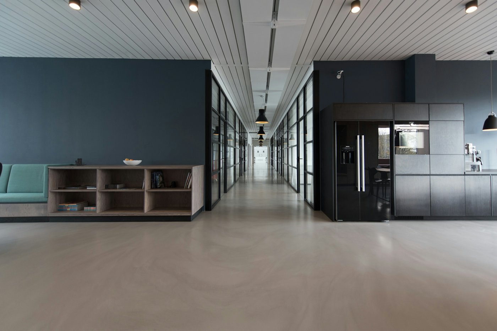

Estratégia e crescimento
Onde investir nos próximos três anos, o que abandonar e quanto isso custa. Um plano de uma página que a diretoria inteira consegue repetir de memória.
- Planejamento estratégico
- Expansão e novos mercados
- Precificação
Consultoria de gestão · Curitiba, desde 2009
Trabalhamos com poucos clientes por vez. Cada projeto tem um sócio à frente, uma meta em número e uma data para acabar.
Marcar uma primeira conversaOnde investir nos próximos três anos, o que abandonar e quanto isso custa. Um plano de uma página que a diretoria inteira consegue repetir de memória.
Margem por produto, por cliente e por canal. Orçamento que as áreas cumprem porque ajudaram a montar, e um fluxo de caixa que avisa do problema com noventa dias de antecedência.
Quem decide o quê, como a família participa e de que maneira a próxima geração entra. Regras combinadas antes de serem necessárias.
Nenhum projeto começa sem um número combinado e nenhum termina com um relatório na gaveta.
Entrevistas com a liderança, leitura dos números dos últimos 36 meses e visita à operação.
Definimos juntos o resultado esperado, o prazo e como ele será medido. Parte dos honorários depende disso.
Um sócio e um consultor dentro da empresa dois dias por semana, trabalhando com a sua equipe.
Reunião mensal de resultados por um ano, sem custo adicional, para garantir que a mudança se sustenta.

+7,2pontos de margem
A empresa crescia 20% ao ano e o lucro não acompanhava. Refizemos a política de preços por perfil de cliente e encerramos 14% do portfólio, que dava prejuízo. A margem operacional passou de 4,1% para 11,3% em dez meses.
3sucessores preparados
O fundador queria se afastar e os três filhos discordavam sobre quem assumiria. Desenhamos o acordo de sócios, um conselho com dois membros externos e um plano de transição de dois anos, concluído em 2024.
R$ 4,6 miliberados em caixa
A expansão era financiada com capital de giro caro. Renegociamos prazos com fornecedores, centralizamos compras e reduzimos o estoque de 71 para 38 dias.
Vinte anos em finanças corporativas, doze deles como diretor financeiro em indústrias de médio porte. Economista pela UFPR, com MBA pelo Insper.
Conselheiro certificado pelo IBGC. Conduziu processos de sucessão em mais de trinta empresas familiares no Sul do país.
A primeira conversa dura uma hora, não custa nada e é com um dos sócios. Se não formos a consultoria certa para o seu momento, dizemos isso e indicamos quem é.